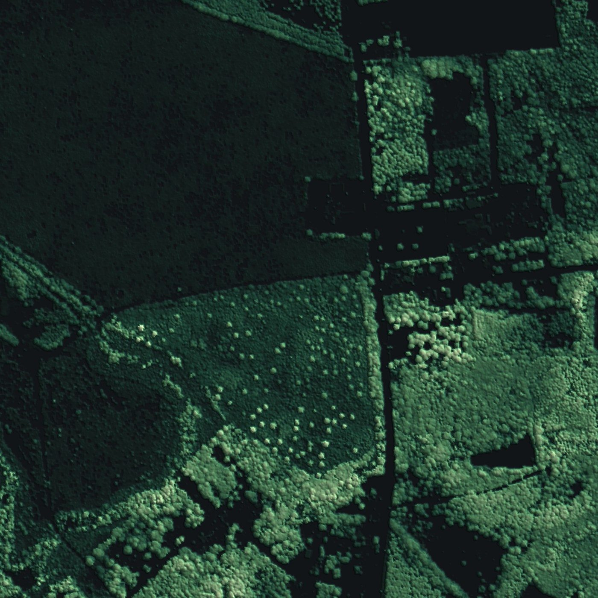
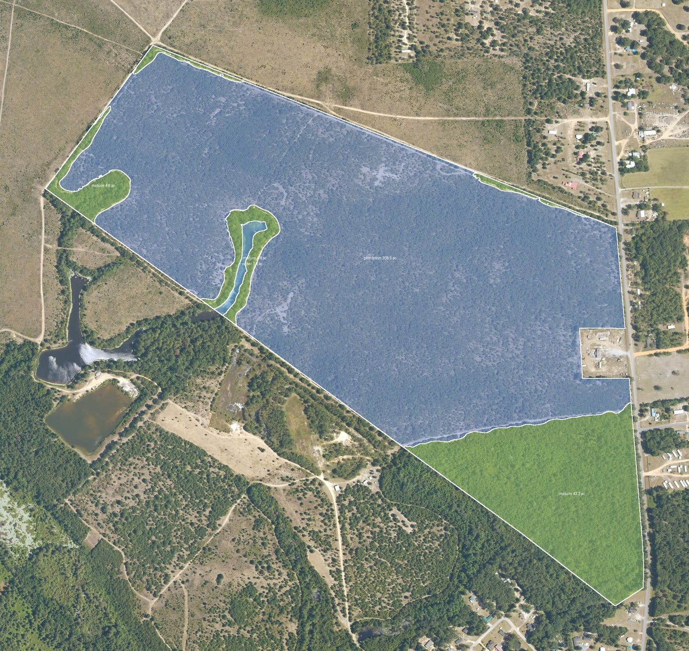
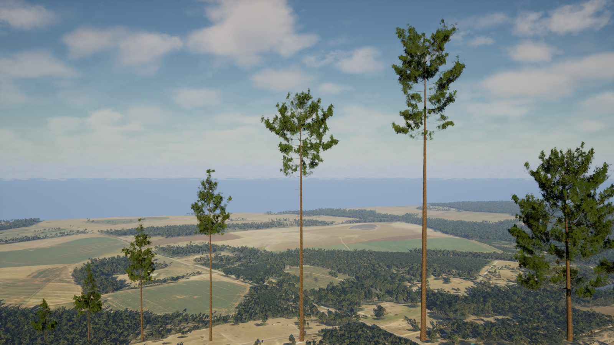
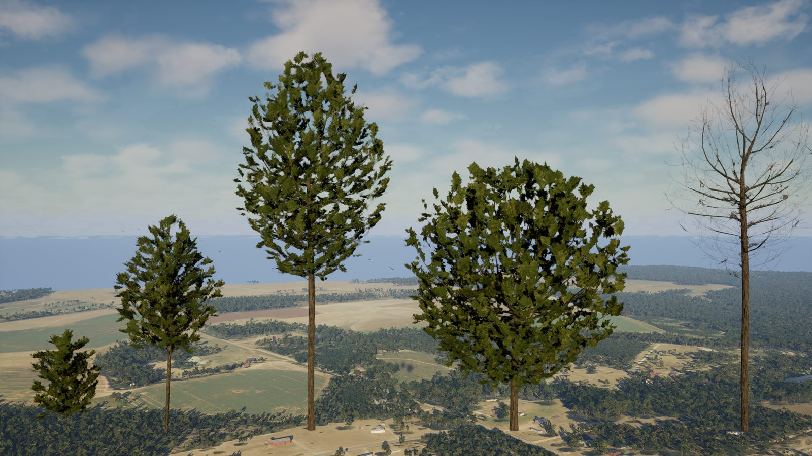
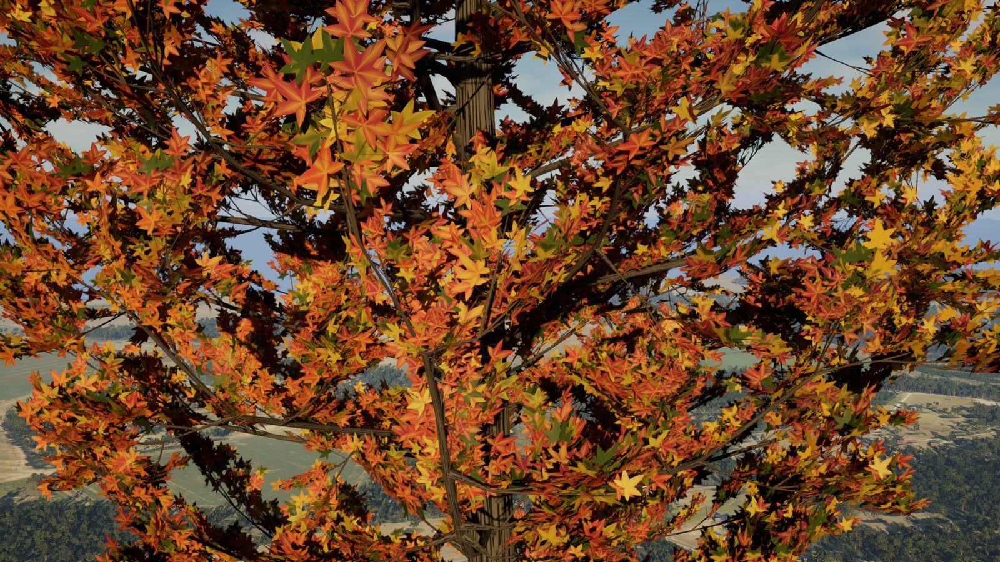
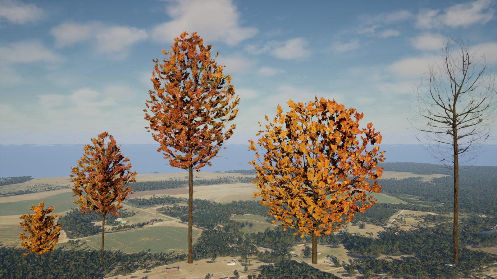
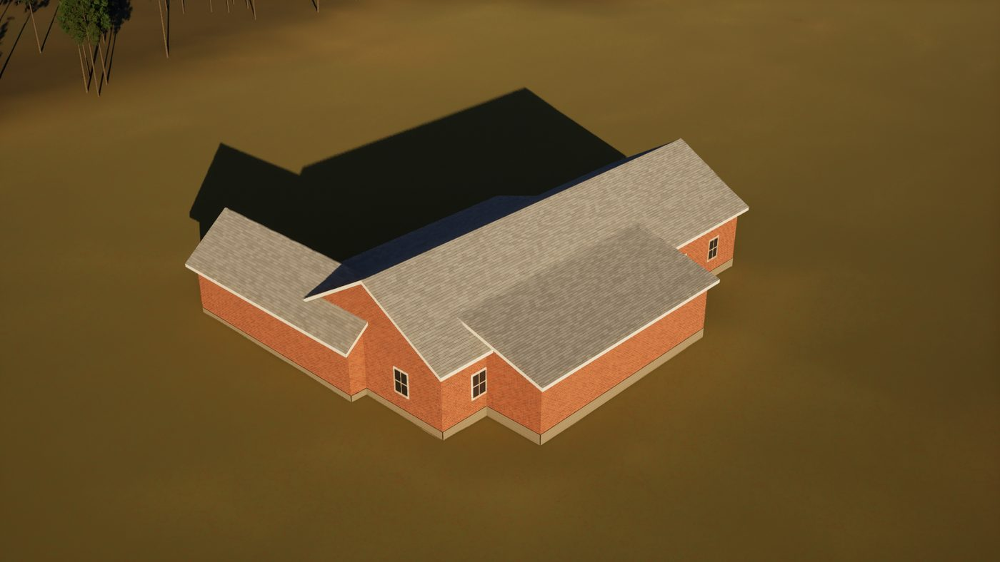
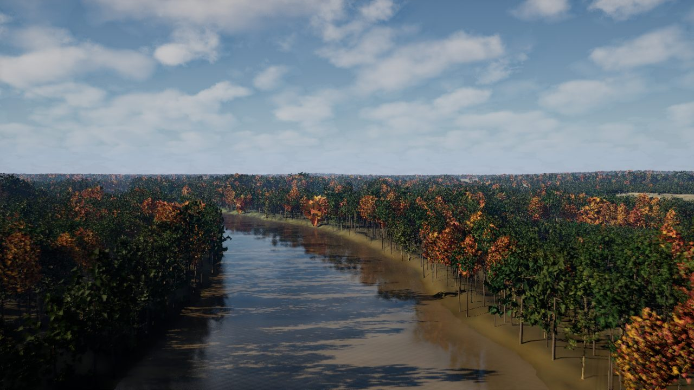

How it’s made.
We film land nobody has filmed. From the state’s laser survey, the newest aerial photo and the county’s parcel lines, we rebuild a property tree by tree and fly a camera over it, in any season. Here is every step, on the Buckeye Road tract.
01 · Read the land
Start from the survey, not a stock scene.
Georgia’s lidar survey fires laser pulses from a plane and records where each one lands. From those points we take the bare ground at one meter and the top of every tree.
The terrain in the film is the property’s own: its real slopes, creeks and ponds.

02 · Read the photo
See what the laser can’t.
The newest aerial photo shows what has changed since the survey was flown, and what the trees are. Plantation rows show in the photo’s pattern. Mature timber, water and new cuts each stand apart.
The county’s parcel map puts the property line on top, labeled approximate.

03 · Grow the right trees Coming to new films
Georgia trees, grown from code.
Most 3D forests are European stock trees. Ours are Georgia’s own: loblolly pine in seven forms from sapling to old sawtimber, and sweetgum in four, with water oak, yellow-poplar and red maple next. Each one grows from its species’ real habits: how the trunk tapers, where the limbs start, how the crown widens with age.
Every tree in the film takes the form that matches its height in the survey, so young stands look young and old ones look old.


04 · Choose the season Coming to new films
Film the land in the season it’s sold.
One setting picks the day of the year. Each species turns on its own calendar and each tree a few days from its neighbors. In winter the leaves drop one by one, down to the bare limbs.
Pines stay green. In mid-November the hardwood draws and creek edges turn red and gold, the way they do from the air.
05 · Up close
Real leaves, not cutout cards.
Every leaf has its species’ outline and veins. A sweetgum’s five pointed lobes go red at the edges while the veins hold yellow, and a few leaves stay green late. No two trees turn alike.
The same trees hold up from a thousand feet and at the treetops.


06 · Rebuild the buildings Coming to new films
The neighborhood, to size.
Barns, homes and sheds come back from the survey’s roof returns, squared up and given real roof shapes: gable, hip, shed or flat. Roof colors come from the photo, and public building outlines catch what the laser missed.
Around Buckeye Road that is 289 buildings, each where it stands.

07 · Fly it and finish it
A camera path over the real canopy.
The flight is planned against the real treetops, so it clears them and stays smooth. Then the titles, the property line on the land, pins for what is nearby, and sound mixed from real field recordings.
You get the film in 16:9, a 4:5 cut and a vertical cut for social feeds, stills, and where your MLS allows it, a version prepared to its rules. Watch the films →

What we never fake.
Nothing goes on screen that we can’t source. Where every figure comes from →
Boundaries
Your survey when you send one. Otherwise the county’s parcel map, labeled approximate whenever the line or the acreage is on screen.
Views
Every view number is measured from the real terrain and the real canopy.
Anything not built
Concept homes, roads and lot divisions are labeled a concept, or illustrative, for as long as they are on screen.
Tree species
The trees stand where the lidar measured them. Their species are a typical mix for the site, and we never present that mix as a survey.
Built in-house: our own pipeline from the survey to the finished film, written with Claude Code and rendered in Unreal Engine 5. Data: lidar from the USGS 3D Elevation Program, aerial photography from USDA NAIP, roads © OpenStreetMap contributors, building outlines © Microsoft (ODbL). Images are frames and test renders from the Buckeye Road film and our tree work, November 2026.
say hi
Your land,
before anyone walks it.
Send the parcel IDs or a listing link and we’ll tell you what a film of it can show. The first conversation is free.
Send a tractImagination. Made tangible.